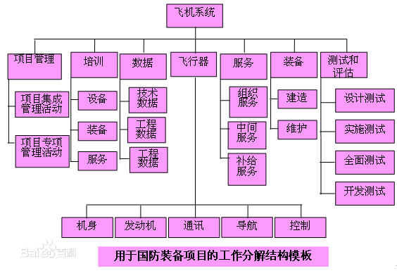
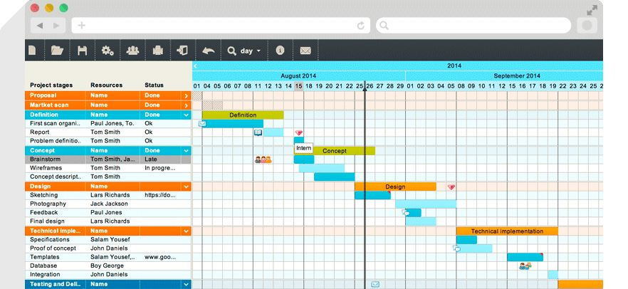

第三章：项目管理
Tracking Progress Baisc Conception（追踪进展的基本概念）KEY WORDS：
- Project Schedule (项目进度)
- Activity (活动)
- Milestone(里程碑)
项目范围的WBS(Work Breakdown Structure)表示:
WBS的基本定义 ：以可交付成果为导向对项目要素进行的分组，它归纳和定义了项目的整个工作范围每下降一层代表对项目工作的更详细定义。
例子：

核心观点(key words):
Top to down(自顶向下),refine by steps(逐步求精)
项目进度的GATT图表示：
关键路径的定义和求解方法：
定义：关键路径法(Critical Path Method, CPM)是一种基于数学计算的项目计划管理方法，是网络图计划方法的一种，属于肯定型的网络图。
作用：Minimum Amount of Time it will be take to complete the Project(最小化时间来完成项目).
求解方法：
- Actual Time 实际时间
- Available Time 可用时间
- Slack（float Time) 浮动时间
核心公式
Slack Time = Available Time – Real Time
注释： 就目前做的题来说，如果能直接推出关键路径先算出关键路径，然后再去找最早开始时间和最迟开始时间，通过最迟开始时间和最早开始时间之差也能获得slack time/float time 。如果不行，在按照原英文书第89页~90页的方法，通过最早开始时间推出FinishTime,从而去算最晚开始时间，进而得到slack time,记slack time =0的活动点连线为关键路径。